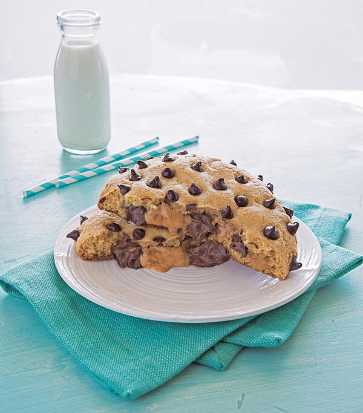

Peanut Butter and Chocolate Hazelnut Striped Cookie
This giant chocolate peanut butter cookie is perfect for sharing (or for keeping it all for yourself!).

By: Wendy Kou, courtesy of cookstr.com
Prep: 40 min
Chilling Time: 40 min
Cooking Time: 30 min
Servings: 2 colossal cookies
People tend to stare when they see colossal cookies—and while they’re wondering if you’re going to offer to share, you can break this cookie open, unveiling beautiful peanut butter and chocolate-hazelnut spread stripes. By then, even the shyest person would muster up the courage to ask you for even just the smallest piece. Now, the question for you is, will you share?
Ingredients:
- 1 cup bread flour
- 1 cup cake flour
- ½ teaspoon baking powder
- ½ teaspoon baking soda
- ½ teaspoon cornstarch
- ½ teaspoon salt
- ½ cup unsalted butter, at room temperature
- 2 tablespoons shortening, at room temperature
- ½ cup packed dark brown sugar
- ½ cup granulated white sugar
- 1 large egg, at room temperature
- 1 teaspoon pure vanilla extract
- 3 tablespoons heavy cream
- ¼ cup chocolate-hazelnut spread (I prefer Nutella)
- ¼ cup peanut butter
- ⅔ cup chocolate chip
Steps:
- Heat oven to 375°F. In large bowl, beat 1/2 cup granulated sugar, the brown sugar, peanut butter, butter and egg with electric mixer on medium speed, or mix with spoon, until well blended. Stir in flour, baking soda and baking powder until dough forms.
- Shape dough into 1-inch balls; roll in additional granulated sugar. On ungreased cookie sheets, place about 2 inches apart.
- Bake 8 to 10 minutes or until edges are light golden brown. Immediately press 1 milk chocolate candy in center of each cookie. Remove from cookie sheets to cooling rack.
Reprinted on cookstr.com with permission from Colossal Cookies: 100 Outrageously Oversized Treats That Change the Baking Game by Wendy Kou, Page Street Publishing Co. 2018.